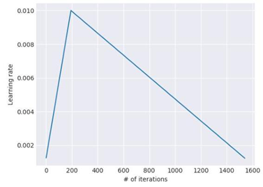

SFT: Supervised Fine-Tuning (教師あり微調整)
最新項目へ
Universal Language Model Fine-tuning for Text Classification (ULMFiT) (2018)
テキスト分類のためのユニバーサル言語モデルの微調整
自然言語処理のための深層学習モデルの開発方法を根本的に変えた転移学習手法。
ULMFiTのステップ構成
- Step 1：汎用ドメイン言語モデルの事前学習
大規模な汎用コーパスを使用して言語モデルを事前学習させる。この段階で、モデルは文法や単語の関係性など、一般的な言語の知識を幅広く学習する。
大規模な汎用ドメインコーパスで言語モデルをトレーニングする。
例) 「NLPのためのImageNet」:Wikipediaの記事からなる1億300万語を含むWikitext-103
- Step 2：タスク固有の言語モデル・ファインチューニング
解きたいタスク（例：映画レビューの感情分析）のデータを使って、事前に学習した言語モデルを調整する。この段階では、特定のタスクのデータ分布に適応させるためにモデルを微調整する。
- Step 3. タスク固有の分類器のファインチューニング
ファインチューニングされた言語モデルに、タスク固有の分類器（テキスト分類であれば、線形ブロック）を追加して学習させる。この分類器のパラメーターはゼロから学習し、より正確な予測ができるように調整する。
ULMFiTで導入された手法
- 段階的凍結解除 (Gradual Unfreezing)
モデルのすべての層を同時にファインチューニングするのではなく、最後の層から徐々に下の層を凍結解除して学習させる。これにより、学習中にモデルがそれまでに学習した知識を忘れてしまう「破滅的忘却」を防ぐ。
- 識別的ファインチューニング (Discriminative Fine-tuning)
モデルの層ごとに異なる学習率を設定する手法。一般的に、入力に近い層ほど汎用的な特徴を学習しているため、より小さい学習率を設定し、出力に近い層ほどタスク固有の特徴を学習させるために、より大きい学習率を設定する。
- 傾斜型三角形学習率 (Slanted Triangular Learning Rates)
短い線形増加期間の後に長い線形減衰期間が続く学習率スケジュールを実装。これにより、「傾斜した三角形」のパターンが作成され、モデルは初期にパラメータ空間を積極的に探索し、その後、過学習を防ぐために安定した最適化に落ち着くことができる。

論文はこちら
要約はこちら
トップに戻る